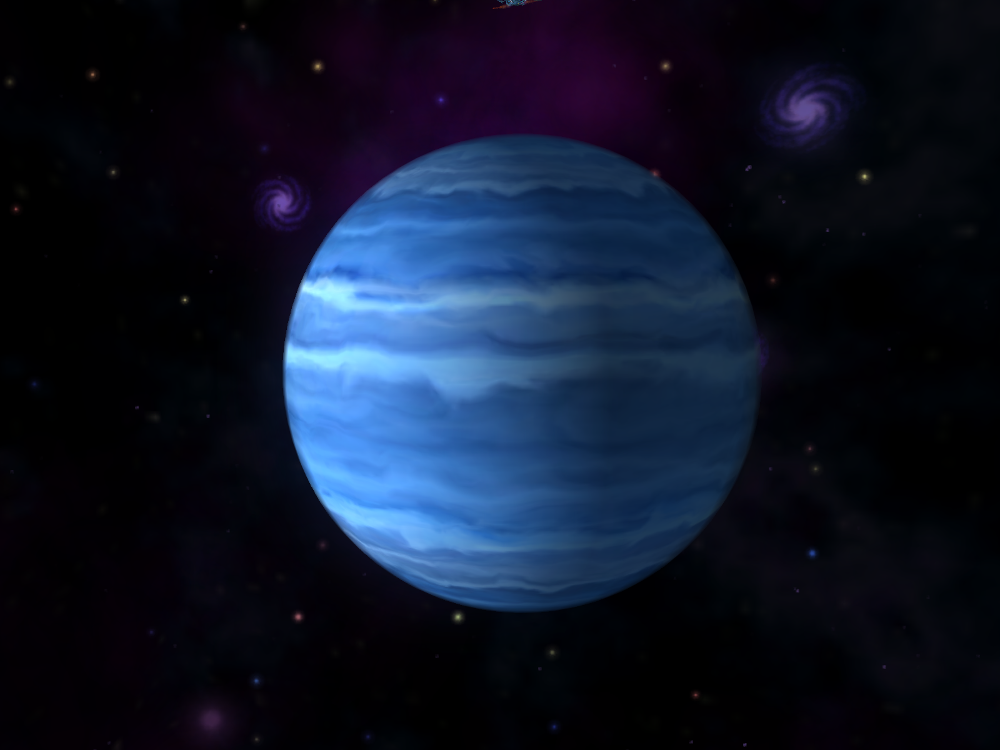

Welcome to Vedant Shah's Homepage!
Hello! My name is Vedant Shah. I am a 15 year-old boy and I attend Northview Heights Secondary School. I am currently in grade 10 and this website is all
about me. This website was made as this was an assignment in my ICS (Integrated Computer Science) class. It is also my first website so I hope all viewers enjoy biographies.
To start of, I want to teach you about something I love: astronomy.
Astronomy is something I have loved since I was 11 years-old. My admiration for astronomy began when my sister was diagnosed with cancer.
During her treatment, my family and I were planning to go to DisneyLand in Florida. However, unfortunately, the doctors did not give us permission to go because since
the cancer was behind Palak's ear, the noise of the plane would affect her ear drums.
However, after some time, the social worker that worked with us, Karen Fung, came to our house and asked me some questions, similar to an interview.
In the interview, she asked me questions about what I liked, disliked, and also, Karen asked me a question about what I want to be when I grow up.
"An aerospace engineer", was what I answered. It was a huge dream for me to accomplish and this is why I applied to Northview Heights Secondary School
for the HMST program. Soon, my parents got a call from Karen and said that my family was going to Pearson International Airport to meet pilots of an "Air Canada" plane. Then, my parents told me that we were going to the airport
because since we were not able to go to Disneyland and I wanted to be an aerospace engineer when I grow up, Karen organized a tour for us at Pearson International Airport. It was courtesy of Air Canada. After a few days, my
grandmother, my parents, Palak, and I went to the airport to meet the pilots. That day, I learned many things about the engine of the plane, what the altitude of the plane, and other fascinating features of the plane. We even
saw the place where the pilots and air hostesses take their breaks and where they sleep. It was extremely amazing learning about the plane, but Palak did not enjoy the tour as she was feeling uneasy. She was moody for the entire
trip and looked really tired, so we decided to go home after a few hours.
For me, though, it was the perfect experience to love aerospace engineering, astronomy, and dive deeper into the topic. It was an amazing experience
for me and I loved it a lot. Even more, I got a pilot's hat from one of the pilots. Since that day, I have loved the field of aerospace and astronomy.
Sometime soon, I hope I will be able to buy a telescope to see the planets in our solar system and witness them first-hand.
Astronomy is "the branch of science that deals with celestial objects, space, and the physical universe as a whole" (Google). Our galaxy is called the
Milky Way galaxy. We have 8 planets in our solar system and their names are:
| Mercury |
 |
- Smallest planet in the Solar System
- Closet planet from the Sun
- Diameter: 4,880 km
- Mass: 3.30 x 10^23kg
- It takes Venus about 88 Earth days to orbit around the Sun.
- Although Mercury does not have a lot of atmosphere, it has small amounts of oxygen, helium, and oxygen. It has even small
parts of potassium, sodium, calcium, and magnesium.
|
| Venus |
|
- Third biggest planet in the Solar System
- Second closest planet from the Sun
- Temperatures on Venus can reach upto 465 degrees Celsius.
- Diameter: 4,880 km
- Mass: 3.30 x 10^24 kg
- It takes Venus about 225 Earth days to orbit around the Sun.
- It is one of the inner planets and is known as a terrestial planet.
- Venus consists mainly of carbon dioxide, nitrogen, and small amounts of sulfur dioxide, argon, water, carbon monoxide, helium and neon.
|
| Earth |
 |
- Fourth biggest planet in the Solar System
- Third closest planet from the Sun
- Diameter: 12,756.3 km
- Mass: 5.972 x 10^23 kg
- It takes Earth about 365 days to orbit around the Sun.
- Earth consists mainly of hyrdogen, nitrogen, oxygen, argon, water, and carbon dioxide.
|
| Mars |
|
- Seventh biggest planet in the Solar System
- Fourth closet planet from the Sun.
- Diameter: 6,794 km
- Mass: 6.39 x 10^23 kg
- It takes Mars about 687 Earth days to orbit around the Sun.
- Mars atmosphere consists of carbon dioxide, nitrogen, argon, with small amounts of oxygen and water.
|
| Jupiter |
 |
- Biggest planet in the Solar System
- Fifth closet planet from the Sun.
- Diameter: 139,822 km
- Mass: 1.898 x 10^27 kg
- It takes Jupiter about 12 Earth years to orbit around the Sun.
- Jupiter atmosphere consists of hydrogen, helium, and small amounts of methane, ammonia, hydrogen sulfide and water.
|
| Saturn |
|
- Second biggest planet in the Solar System
- Sixth closet planet from the Sun.
- Diameter: 116,464 km
- Mass: 5.683 x 10^26 kg
- It takes Saturn about 29 Earth years to orbit around the Sun.
- Saturn's atmosphere consists of hydrogen, helium, and small amounts of methane and water ice.
|
| Uranus |
 |
- Sixth biggest planet in the Solar System
- Seventh closet planet from the Sun.
- Diameter: 50,724 km
- Mass: 8.681 x 10^25 kg
- It takes Uranus about 84 Earth years to orbit around the Sun.
- Uranus's atmosphere consists of hydrogen, helium, and small amounts of methane, ammonia, and water.
|
| Neptune |
 |
- Fifth biggest planet in the Solar System
- Eigth closet planet from the Sun.
- Diameter: 49,244 km
- Mass: 1.024 x 10^26 kg
- It takes Neptune about 165 Earth years to orbit around the Sun.
- Jupiter's atmosphere consists of hydrogen, helium, and small amounts of water, ammonia and other ices.
|
Here is a list of my favorite links that are related to space and astronomy. I hope this will be assistance to you!
Click NASA to go to the homepage of NASA!
Click Kids Astronomy to go to the homepage of Kids Astronomy!
Click Amazing Space to go to the homepage of Aamzing Space!
Click Astronomy Now to go to the homepage of Astronomy Now!
By reading the information presented above, you can tell I am an astronomy enthusiast and I love the topic a lot. However, do not be scared
because I will not keep on talking about astronomy and how it is exciting to learn. When you return to the top, there are tabs that will take you
to other pages which talk about who I am. Have fun!
|